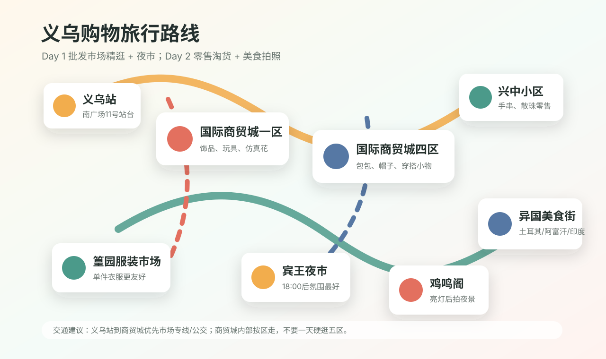
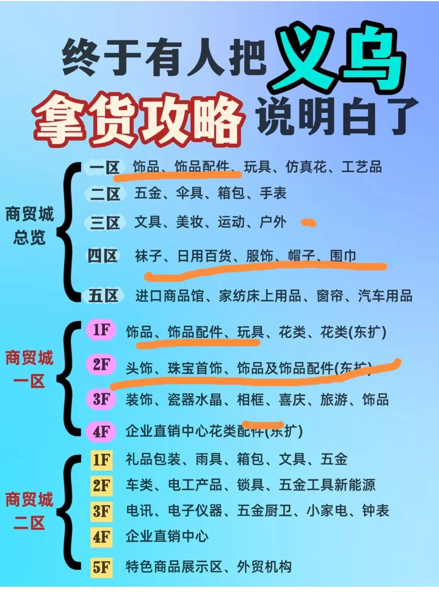
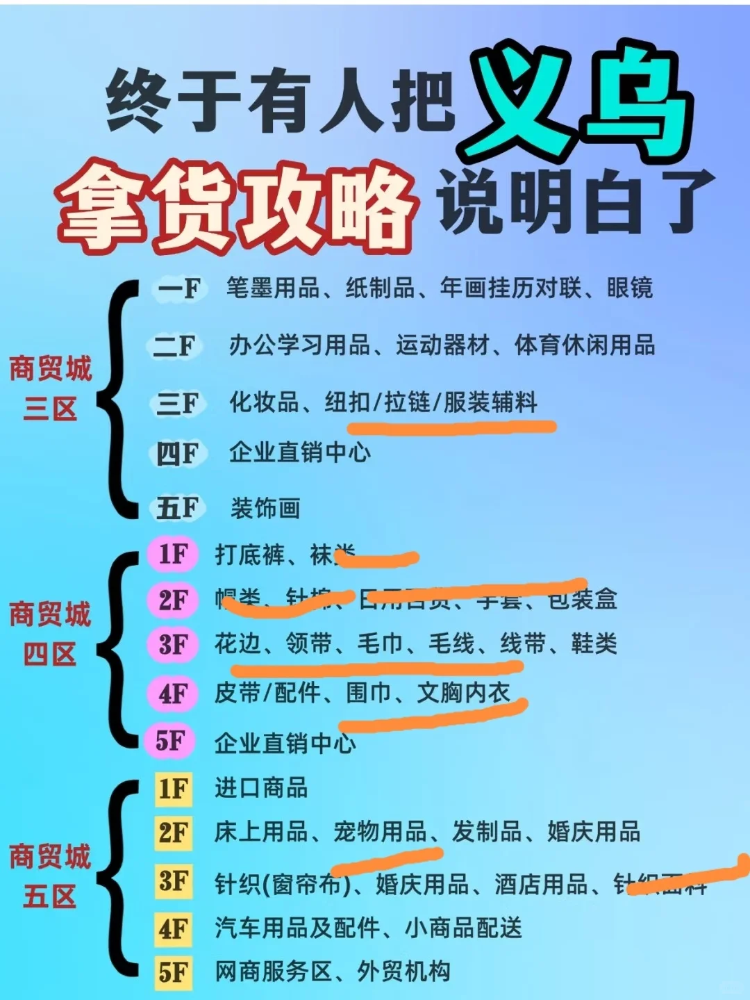
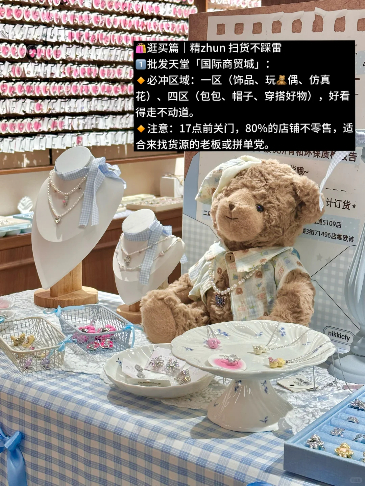

Day 1 09:40
义乌站到国际商贸城
南广场11号站台坐市场专线3路，攻略提到约25分钟；赶时间或第一次来，直接出租车到第一个目标区更省心。
Yiwu Shopping Field Guide
按“怎么逛”组织的义乌购物攻略。白天锁定国际商贸城核心区，晚上切换到零售市场、夜市和拍照点。最重要的原则：先列采购目标，再选区、楼层、摊位号。
南广场11号站台坐市场专线3路，攻略提到约25分钟；赶时间或第一次来，直接出租车到第一个目标区更省心。
进口、家纺、宠物、汽车用品。有明确需求再去，普通游客快速扫过。
袜子、帽子、睡衣、日百。1F 小袜岛零售友好，2F 帽子可逛。
饰品、发饰、玩具、仿真花。从 4F 往下逛效率高，先问是否零售。
想买衣服去篁园；想拍夜景去鸡鸣阁；想小吃和便宜小商品去宾王夜市。
手串、珠子、饰品配件更适合单买，慢慢淘比在批发档口被拒绝舒服。
重点不是打卡，而是知道每个区卖什么、怎么顺路逛、什么时候该换到零售市场。
如果地图瓦片加载失败，下面的点位和路线文字仍然可用；实时路线请点击外部地图导航。
| 区 | 主要品类 | 适合谁 |
|---|---|---|
| 一区 | 饰品、发饰、玩具、玩偶、仿真花、工艺品、喜庆用品。 | 普通游客和年轻人最容易逛出收获。 |
| 二区 | 五金、雨具、箱包、锁具、小家电、钟表、电子仪器。 | 更偏采购，不是观光型区域。 |
| 三区 | 文具、美妆、运动户外、眼镜、服装辅料。 | 文创、办公、辅料、运动用品选品。 |
| 四区 | 袜子、帽子、睡衣、内衣、日用百货、围巾、鞋类。 | 零售友好度相对高，是游客重点区。 |
| 五区 | 进口商品、床品、宠物用品、发制品、婚庆用品、窗帘、汽车用品。 | 有明确需求的人。 |
手串、珠子、饰品配件，可以单买，适合第二天上午慢慢淘。
衣服、服装零售，攻略提到可逛到 20:30 左右，适合晚上补买穿搭类。
18:00 后热闹，衣服、小吃、小商品都有；适合体验，不适合严肃比价采购。
| 项目 | 建议 | 备注 |
|---|---|---|
| 义乌站 -> 商贸城 | 南广场11号站台坐市场专线3路；也可坐 BRT1 号线。 | 攻略提到专线约25分钟、末班17:30；BRT约2元。 |
| 赶时间 | 出租车到第一个目标区。 | 第一次来找网约车上车点可能耗时。 |
| 住宿 | 稠城街道、商贸城附近、新光汇、义乌之心、吾悦广场一带。 | 下楼吃饭方便，晚上转场省体力。 |
| 预算 | 公交0-2元；区间打车约10-45元；餐饮人均40-100元。 | 购物预算单独算。 |
醋炒鸡、老鸭煲、东河肉饼、手擀面、酒糟核桃、麦角。
土耳其苏坦/BEYTI、阿富汗阿里亚娜、印度侯纯里。义乌外贸氛围浓，晚餐适合安排异国菜。
图片已上传到仓库内，不再依赖小红书外链。




